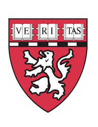
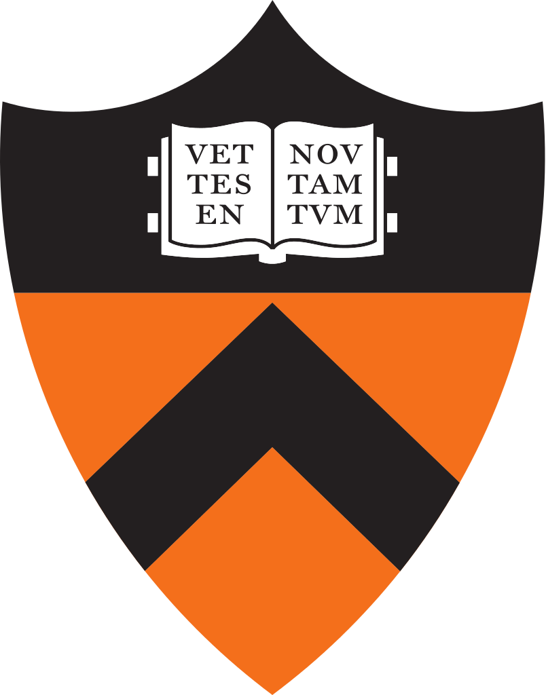

RESUME
Education
Wellesley College
Sep 2014 - May 2018
- BA Degree: Anticipated 2018
- Major: Neuroscience | Minor: Computer Science
- Coursework:
- Biology/Chemistry/Physics
- BISC 112: Cellular and Molecular Biology w/ Lab
- BISC 113: Organismal Biology w/Lab
- CHEM 105: Fundamentals of Chemistry w/ Lab
- CHEM 205: Chemical Analysis and Equilibrium w/Lab
- CHEM 211: Organic Chemistry I w/Lab
- PHYS 104: Fundamentals of Mechanics w/Lab
- Neuroscience
- NEUR 100:Introduction to Neuroscience w/ Practicum
- PSYC 217: Cognition
- NEUR 200: Neurons, Networks, and Behavior w/Lab
- NEUR 250G: Behavioral Neurophysiology
- NEUR 335: Computational Neuroscience w/Lab(MATLAB)
- Computer Science/ Math
- MATH 115: Calculus I
- MATH 116: Calculus II
- PSYC 205: Statistics w/ Lab
- MATH 225: Combinatorics and Graph Theory
- CS 111: Computer Science and Problem Solving(Python)
- CS 230: Data Structures w/ Lab(Java)
- CS 332: Visual Processing in Computer and Biological Vision Systems
- Other
- HIST 200: Roots of the Western Tradition
- SPAN 241: Introduction to Hispanic Studies
- ENG 120: Critical Interpretation
- Biology/Chemistry/Physics
Research Experience
Summer Research Fellow
Jun 2016 - Aug 2016
Summer Research Fellow- Quintana Lab
Harvard Medical School/Brigham and Women's Hospital, Boston, MA
- Project:The role of Basigin as a regulator of astrocyte function in multiple sclerosis and experimental autoimmune encephalomyelitis
- Principal Investigator:Francisco Quintana, PhD
- Skills:Cell culture, plasmid construction/cloning, transduction,viral transfection ,qPCR,gel electrophoresis,EAE induction in mice,cell sorting
Undergraduate Research Assistant
Jan 2016 - Present
Weist Lab: Undergraduate Research Assistant
Wellesley College Neuroscience Department, Wellesley, MA
- Project:Role of medio-dorsal frontal and posterior parietal neurons during auditory detection performance in rats
- Principal Investigator: Michael Wiest, PhD.
- computational neuroscience,modeling(MATLAB),electrophysiology,animal handling,behavioral assays
Undergraduate Research Assistant
Aug 2015 - Dec 2015
Flynn Lab: Undergraduate Research Assistant
Wellesley College Chemistry Department, Wellesley, MA
- Project: Development of a multi-purpose nanovehicle for targeted imaging and treatment of solid tissue tumors
- Principal Investigator: Nolan Flynn, PhD
- Skills: synthesis, functionalization, purification, and analysis of gold nanoparticles, Western Blot, UV-Vis, DLS
Undergraduate Research Assistant
Dec 2015-Feb 2016

Fraenkel Lab: Undergraduate Research Assistant
Massachusetts Institute of Technology, Cambridge, MA
- Project: Bioinformatic determination of neurodegenerative disease signatures
- Principal Investigator: Ernest Frankel, PhD
- Skills: bioinformatics(PCA,autoencoders,kernel PCA), Python, R, bash
Summer Research Fellow
Jun 2015 - Aug 2015
Murthy Lab: Summer Research Fellow
Princeton Neuroscience Institute, Princeton NJ
- Project: The role of acoustic signal recognition in the control of Drosophila female behavior
- Principal Investigator: Mala Murthy, PhD
- Skills: computational neuroscience, modeling(MATLAB),data analysis, electrophysiology,optogenetics,Drosophila genetics
Work Experience
Sept 2014 - Present
Science Club for Girls, Mentor Scientist/Curriculum Developer
Newton MA
Lead weekly lessons for a class of 12 2nd-4th grade girls about human biology and chemistry, and direct interactive experiments; wrote and piloted a biochemistry curriculum in Newton, to be taught at Science Club for Girls sites across the country starting in Fall, 2016
Aug 2015 - Present
Pforzheimer Learning and Teaching Center, Academic Peer Tutor
Wellesley MA
Serve as a general peer academic advisor for 153 students in my residence hall and provide particular academic mentorship for first-year students; plan and deliver academic workshops throughout the year
May 2011 - Aug 2013
Merrimack Valley Hospital, Volunteer/Intern
Haverhill MA
Directed patients to various hospital departments, processed patient data, shadowed doctors in various departments
Activities and Leadership
- Wellesley College Neuroscience Club- Treasurer('15-'16),President('16-'17)
- Wellesley Volunteers- Treasurer('14-'15)
- Wellesley College Science Club for Girls- Mentor Scientist('14-'16),President('16-'17)
- Partners in Health Engage- Education and Community Building Lead('14-'16)
- Wellesley College Mental Health Educator- ('14-'15)
- Wellesley College Biochemistry Society- ('14-'16)